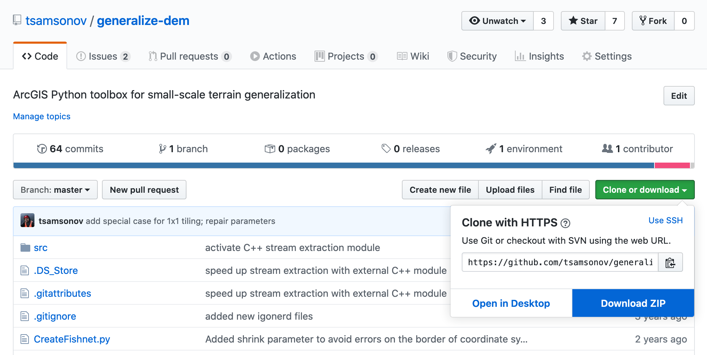

F Задание №6. Генерализация цифровой модели рельефа
Цель задания — овладение различными техниками генерализации ЦМР.
В настоящем задании необходимо сравнить два метода мелкомасштабной генерализации ЦМР: глобальная фильтрация и структурная генерализация.
Задачи работы включают подготовку исходных данных, разработку программного инструмента итерационного сглаживания ЦМР, выполнение генерализации ЦМР методами структурной генерализации и глобальной фильтрации, а также сравнительный анализ полученных результатов
F.1 Подготовка исходных данных
Закачайте набор инструментов DEM Generalization и разархивируйте его:
Рис. F.1: Инструмент генерализации ЦМР DEM Generalization
Закачайте фрагмент ЦМР GEBCO 2021 размером \(10^\circ \times 10^\circ\), используя веб-интерфейс. Для этого включите показ градусной сетки (Show graticule), выберите формат GeoTIFF и, используя CTRL + клик, обведите квадрат со сторонами, примерно совпадающими с линиями сетки, кратными 5 градусам:

Рис. F.2: Загрузка цифровой модели рельефа GEBCO
На выбор предлагаются фрагменты с центрами в следующих точках:
- Красное море (\(40; 15\));
- Альпы (\(10; 45\));
- Норвегия (\(10; 60\));
- Южный Каспий (\(50; 40\));
- Центральные Анды (\(-70; -15\));
- Северные Анды (\(-75; 5\));
- Аляска (\(-150; 60\));
- Камчатка (\(160; 55\));
- Австралия (\(150; -35\));
- Калифорния (\(-120; 35\))
Закачайте данные Natural Earth масштаба 1:10 000 000 для следующих слоев:
- береговая линия (Coastline);
- океан (Ocean);
- гидрография площадная (Rivers + lake centerlines);
- гидрография линейная (Lakes + Reservoirs)
Получите охват скачанного растра в качестве полигона (Raster Domain).
Обрежьте полученным полигоном данные Natural Earth (Clip).
Перепроецируйте все исходные данные (ЦМР + три векторных слоя) в цилиндрическую равнопромежуточную проекцию World_Plate_Carree.
Если операция выполнена верно, то проецированная версия ЦМР должна в точности совпадать с исходной как по размерам, так и по значениям. Отличие будет заключаться только в координатах ячеек, которые от градусов перейдут в метрические.
F.2 Автоматизация итерационного сглаживания ЦМР
В данной части задания необходимо создать набор инструментов Python Toolbox, содержащий один инструмент Iterate Focal Statistics, который выполняет последовательное сглаживание цифровой модели рельефа фильтром среднего в несколько проходов с использованием заданных параметров.
Предварительное чтение:
- Синтаксис вызова инструмента Focal Statistics средствами языка программирования Python.
- Создание нового набора инструментов Python Toolbox.
Параметры инструмента:
- Входная ЦМР (Input Raster DEM).
- Размер плавающего окна (Filter size).
- Количество итераций (Number of iterations).
- Выходная ЦМР (Output Raster DEM).
Указания к выполнению:
Скачайте шаблон инструмента Python Toolbox.
Переименуйте шаблон в
Ex6.pyt.Модифицируйте шаблон, дав основному инструменту название
Iterate Focal Statisticsи определив в нем необходимые параметры и их типы.Добавьте строку импорта функций модуля Spatial Analyst:
from arcpy.sa import *.Выполните редактирование функции
execute(), включив в нее следующие шаги (вместо многоточия подставьте нужные параметры):- Чтение параметров инструмента в теле функции. Например:
in_raster = parameters[0].valueAsText. - Создание объекта типа Raster из слоя входной ЦМР:
dem = Raster(...). - Создание прямоугольной окрестности заданного размера:
nbr = NbrRectangle(...). - Организация цикла от \(0\) до \(N-1\), где \(N\) — количество итераций, переданное в качестве параметра инструмента:
for i in range(N):. Внутри цикла:- Вывод сообщения о текущем номере итерации:
arcpy.AddMessage(...). - Вызов функции фокальной статистики с созданной ранее окрестностью. Чтобы на каждой итерации на вход подавался результат выполнения предыдущей итерации, просто записывайте его в ту же переменную:
dem = FocalStatistics(dem, ...).
- Вывод сообщения о текущем номере итерации:
- Сохранение полученного растра в выходной набор данных Output Raster DEM:
dem.save(...).
- Чтение параметров инструмента в теле функции. Например:
F.3 Сравнение структурной генерализации и глобальной фильтрации ЦМР
В данной части задания необходимо выполнить генерализацию фрагмента глобальной ЦМР двумя методами: структурная генерализация и глобальная фильтрация.
Выполните генерализацию ЦМР с использованием инструмента Generalize DEM, указав слой ocean в качестве параметра Marine area polygon feature layer. Для начала выполните генерализацию со стандартными параметрами, после этого включите сглаживание ЦМР в блоке Widening and Smoothing и усильте генерализационный эффект в блоке Main parameters таким образом чтобы результирующая ЦМР по детализации соответствовала масштабу 1:10 000 000.
Выполните генерализацию ЦМР с использованием созданного вами инструмента Iterate Focal Statistics. Используйте размер окна, равный 5 ячейкам и подберите количество итераций такое, при котором детализация сглаженной ЦМР будет равна результату, полученному методом структурной генерализации.
Создайте таблицу описательных статистик исходной и генерализованных ЦМР, включающую следующие столбцы:
- минимум;
- максимум;
- среднее;
- стандартное отклонение;
Постройте по ЦМР горизонтали на следующих уровнях (можно взять то подмножество, которое релевантно для вашей области):
- -12000
- -10000
- -8000
- -6000
- -5000
- -4500
- -4000
- -3500
- -3000
- -2500
- -2000
- -1500
- -1000
- -500
- -200
- -100
- -50
- 0
- 50
- 100
- 150
- 200
- 300
- 500
- 750
- 1000
- 1250
- 1500
- 1750
- 2000
- 2500
- 3000
- 3500
- 4000
- 4500
- 5000
- 6000
- 7000
- 8000
- 9000
Отобразите три цифровые модели рельефа в единой гипсометрической шкале с вышеуказанными ступенями. Спроектируйте цветовую шкалу, на которой будут хорошо различимы указанные ступени.
Добавьте объекты береговой линии, линейной и площадной гидрографии. В проекте одновремененно должны отображаться следующие слои: цифровая модель рельефа, горизонтали, береговая линия, гидрография линейная, гидрография площадная.
Экспортируйте три изображения в масштабе 1:10 000 000:
- Исходная ЦМР
- Структурная генерализация
- Генерализация методом глобальной фильтрации
Напишите отчет о проделанной работе, который включает следующие пункты:
- Цель и задачи
- Источники данных
- Алгоритмы генерализации (пошаговое описание).
- Ход выполнения работы
- Анализ результатов
В разделе анализа результатов необходимо сравнить качество полученных ЦМР с точки зрения географического правдоподобия и точности отображения рельефа. Анализ должен опираться как на визуальное сравнение изображений, так и на рассчитанные для каждой ЦМР описательные статистики.